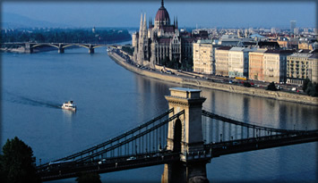
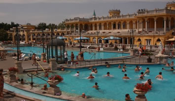
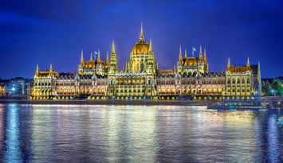
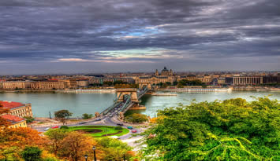

Welcome to Caitlin Travel Log: Hungary
Capital: Budapest
The foundation was laid in the ninth century by the great Magyar chief, Árpád, who after having settled in the Carpathian Basin lead the people from paganism toward Christianity. On Christmas Day, 1000, Árpád's great grandson, Stephen ascended to the throne with a crown sent from Rome by Pope Sylvester II. The kingdom and nation of Hungary was born.

Budapest, Hungary

Things to Do
The former Royal Palace has been razed and rebuilt at least half a dozen times over the past seven centuries. Béla IV established a royal residence here in the mid-13th century, and subsequent kings added to the structure. The palace was levelled in the battle to rout the Turks in 1686; the Habsburgs rebuilt it but spent very little time here. Today the Royal Palace contains two important museums as well as the National Széchenyi Library.There are two entrances to the Royal Palace. The first is via the Habsburg Steps, southeast of Szent György tér and through an ornamental gateway dating from 1903. The other way in is via Corvinus Gate, with its big black raven symbolising King Matthias Corvinus, southwest of the square.The Hungarian National Gallery is an overwhelming collection over four floors that traces Hungarian art from the 11th century to the present. The largest collections include medieval and Renaissance stonework, Gothic wooden sculptures and panel paintings, late Gothic winged altars, and late Renaissance and baroque art.The museum also has an important collection of Hungarian paintings and sculpture from the 19th and 20th centuries. Keep an eye open for the overwrought Romantic Nationalist ‘heroic’ paintings by Gyula Benczúr, the harrowing depictions of war and the dispossessed by László Mednyánszky, the unique portraits by József Rippl-Rónai, the almost religious canvases by Tivadar Csontváry, the paintings of carnivals by Vilmos Aba-Novák and works by the realist Mihály Munkácsy.The Castle Museum, which is part of the Budapest History Museum, looks at the 2000 years of the city on three floors. Restored palace rooms dating from the 15th century can be entered from the basement, where there are three vaulted halls, one with a magnificent Renaissance door frame in red marble that bears the seal of Queen Beatrix, and tiles with a raven and a ring (the seal of her husband, King Matthias Corvinus), leading to the Gothic Hall, the Royal Cellar and the 14th-century Tower Chapel.On the ground floor exhibits showcase Budapest during the Middle Ages, with important Gothic statues of courtiers, squires and saints discovered during excavations in 1974. There are also artefacts recently recovered from a well dating from Turkish times, most notably a 14th-century tapestry of the Hungarian coat of arms with the fleur-de-lis of the House of Anjou. A wonderful new exhibit on the 1st floor traces the history of the city from the Turkish occupation to modern times in 10 multimedia sections, which takes an interesting and very intelligent look at housing, ethnic diversity, religion and other such matters over the centuries. The excellent audioguide is 1200Ft.

Getting Here and Around
Subway (Metro) – Budapest has three subway lines and the fourth one, Metro 4, is currently under construction.
M1 or Millennium Underground (yellow line) - runs under Andrássy Avenue in Pest, between Vörösmarty tér and Mexikói út
M2 (red line) - runs east west, between Déli pályaudvar and Örs vezér tere
M3 (blue line) - runs north south in Pest, between Újpest-Központ and Kőbánya-Kispest
M4 - runs between Kelenföldi pályaudvar and Keleti pályaudvar. The main junction where all three subway lines meet is at Deák Ferenc tér in the city center.Yellow Streetcars – Budapest has a vast system of streets. Here are some useful routes:
No. 2 - runs along the Pest riverfront connecting Margit hid and Petőfi hid
No. 4 - runs on the Grand Boulevard connecting Széll Kálmán tér (formerly Moszkva tér) and Október 23. utca
No. 6 - runs also on the Grand Boulevard connecting Széll Kálmán tér and Móricz Zsigmond körtér in Buda
No. 19 - runs along the Buda riverfront connecting Batthyány tér and Gellért tér and continues on to Kelenföld
No. 49 - runs between Buda and Pest connecting Kelenföldi Pályaudvar in Buda and Deák tér in Pest
Here is an interesting fact: If you ride streetcars 4 or 6 from the first to the last stop in either direction, you will have taken the world's longest streetcar ride.Trolley Buses – Trolley bus service is available on 13 routes in Pest only. Trolley buses are numbered starting from 70 because the first route began operations on Stalin's 70th birthday in 1949.Buses – The majority of people in Budapest using mass transit travel by bus. There are over 200 routes, and express buses with red number signs serve the busiest routes in the city. They travel along the same route as the regular buses with black number signs, but make fewer stops. Buses are also prevalent in the Buda Hills.

History
Traces have been found of settlements dating back as far as the Old Stone Age. People lived on both sides of the Danube, where Budapest now stands, in the second millennium BC Bronze Age urn sites have also been uncovered. In the 6th C. BC Scythians from the Black Sea region settled here, and there are signs of Celto-Illyrian tribes having been here in the 4th/3rd C BC.
A decisive factor in the town's development was the building of a Roman fort in what is now Óbuda. The Roman base of Aquincum, separated into civilian and military districts, was the capital of the province ofz Pannonia and flourished during the second half of the 2nd C BC.
In the 5th C A.D. the Huns swept across the country, and King Attila set up a great new kingdom in what is now Hungary. From the 6th to the 9th C the Avars settled where Budapest now stands. About 896 the Magyars led by Prince Árpád settled in the area of present-day Óbuda. Later on they migrated to the hills further west to take advantage of the greater protection they offered.
Around the year 1000 Stephen (István) I, King of Hungary, organized a feudal state on the Central European model and introduced Christianity. A few years later merchants from central and western Europe settled in Buda and Pest and helped both places to develop rapidly. In 1241-42 Mongols stormed the Danube towns of Buda and Pest. A few years later the construction of the Castle of Buda ordered by King Béla IV was completed. The royal court moved to Buda in 1347 again, when work was begun to expand the fortification into a palace in contemporary Gothic style. From then on Buda became a royal town, while Pest developed into a prosperous trading center. In the second half of the 15th C Matthias Corvinus extended the Royal Palace and Buda, together with Visegrád, became a center of Renaissance culture.
In 1526, after their victory at Mohács, the Turks took Buda and Pest. Under Sultan Süleyman I (the Magnificent) many churches were converted into mosques, fine bath-houses constructed and defensive works modernized. Buda became the seat of a Grand Vizier.
©Caitlin Bero 2015 |